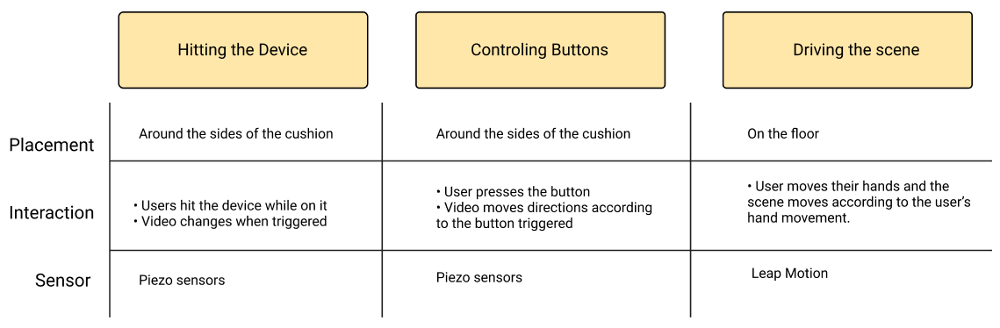

My Role: User research, Interaction design
Timeline: 1 month
Team: Hyemin Lee (engineer), Samuele (engineer), Me
Summary: After conducting user research, I proposed a
way to add interaction to create a full multi-sensory experience on the
prototype.
Multisensory integration has been actively discussed in fields like
neuroscience. Research shows that simultaneously triggering our 5
senses enhance the contextual learning experience.
This prototype is an all-in-one multisensory stimulating artwork
that provides visual, auditory, haptic, gustatory and olfactory
data to the users. The prototype attempts to increase engagement
and user interaction in museums. The device was displayed at the
Natural History Gallery of Science Museum in Seoul, South Korea
after its completion.
When the user is on the cushion, the device recognizes the user’s
presence by detecting the weight using the load cell sensor. Then
the analog data detected is converted to a digital signal through
the MCU, the GPIO pin of the video control device Brightsign. Using
the Four Brightsign devices, a video is projected using the four
projectors which are placed on each side.
We analyzed how the users interact with the device when they were invited to experience the prototype. We identified two main ways users interacted with the prototype:
Laying face down on the device
Attention: Focus on 3 out of the four videos. Video on front being the primary focus.
Movement: Same position throughout the experience.
Sitting down with one’s leg criss crossed
Attention: Focus on 3 out of the four videos. Video on front being the primary focus
Movement: The user looks back and faces different directions throughout the experience.
The user is not an actor
User is not engaged in the interaction because there is no
call to action to the user. The users are left always
passive. Both types of users are only a spectator,
who feel and see a lot of things but are not able to
interact with the device. While the device was supposed to
provide a multi-sensory experience, it was providing an
unbalanced interaction where users were only focused on
the ‘sight’.
The user does not actively interact with all 4 sides
There is limited use of the projector placed at the back of the user.
The user is left in the same position once they are on the device.
Even if the users view the video behind them, they do not c
hange their body position, limiting the 4 sided interaction
of the user.
We brainstormed different types of interactions that we could implement to shift the user from a spectator to an actor.
Leap Motion: Low feasibility
Distracts the video placed on the floor
The sensor cannot be placed on the ceiling because the users may use the device face down and the ceiling is too high for the sensor
Raspberry pi isn’t enough to directly run the processing power
Piezo sensor: Medium feasibility
Placing sensor inside the cushion may be difficult
Because it is an analogical sensor, we need to have an Arduino connected to the raspberry pi
We decided to implement the hitting interaction with the Piezo sensor because it was the easiest to implement. We chose to implement the hitting interaction as it gave the users more freedom to interact with the prototype.
In order to implement the hit interaction, we first needed to define
what ‘hitting’ means to the users. We wanted to understand how much
force they would use when they were told to ‘hit’ the device.
Through this process, we tried to find the optimal threshold. In
doing so, we analyzed the cognitive response with different word
choices and body positions.
The participants were told to interact with the sensors on top and next to it.
The experiment was designed for 3 different conditions
in the following order:
Ask the users to lay on the couch in a specific position: Facedown with head towards the tip of the cusion
Ask people to hit the sides of the device. 3 different ticker words were given to users: 'Hit', 'Tap', 'Touch'
Harder to detect a ‘Hit’ next to the sensor than on it
Users generally hit harder with ‘Hit’ than other words.
Users generally tap faster with ‘Touch’ and ‘Tap’
Sensor is more sensitive on the curved side of the cushion
Piezo sensors are highly inconsistent
Due to time constraints, I was ended my research intership after my first experiment.
I learned to work on a hands-on prototype outside of the digital space. This project helped me understand the
importance of cognitive response in human-computer interaction.
Upon reflection, the Multisensory prototype provided an enhancement of the current state.
Users found the experience more engaging and less passive.
If I were to work on the prototype further, I hope to be able to also work on the digital space as well.
Compare the different between Multisensory alignment and misalignment
Prototype and test different video content to keep the user focused on the artifact
Thanks for visiting! Say hi 👋 on Medium, LinkedIn, or Email.
© 2019 SoYee Park